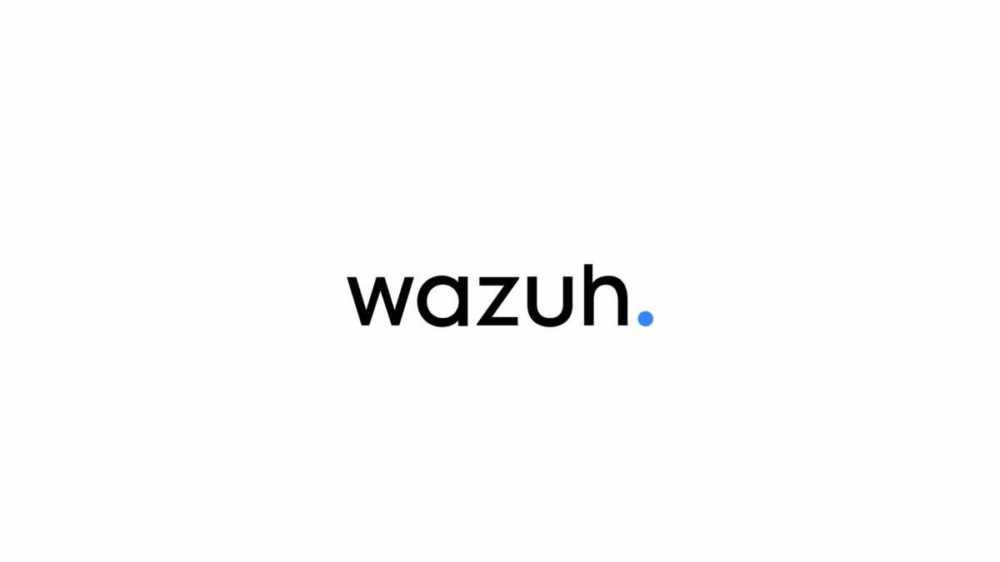
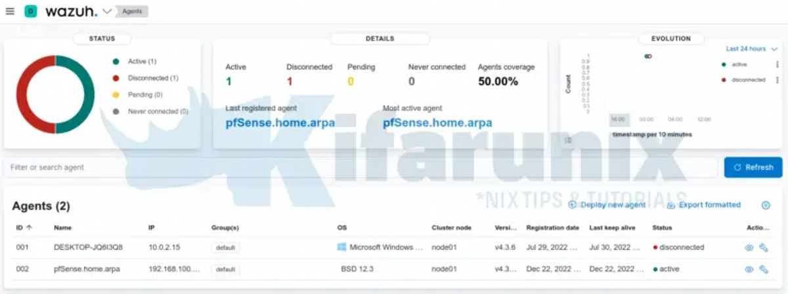
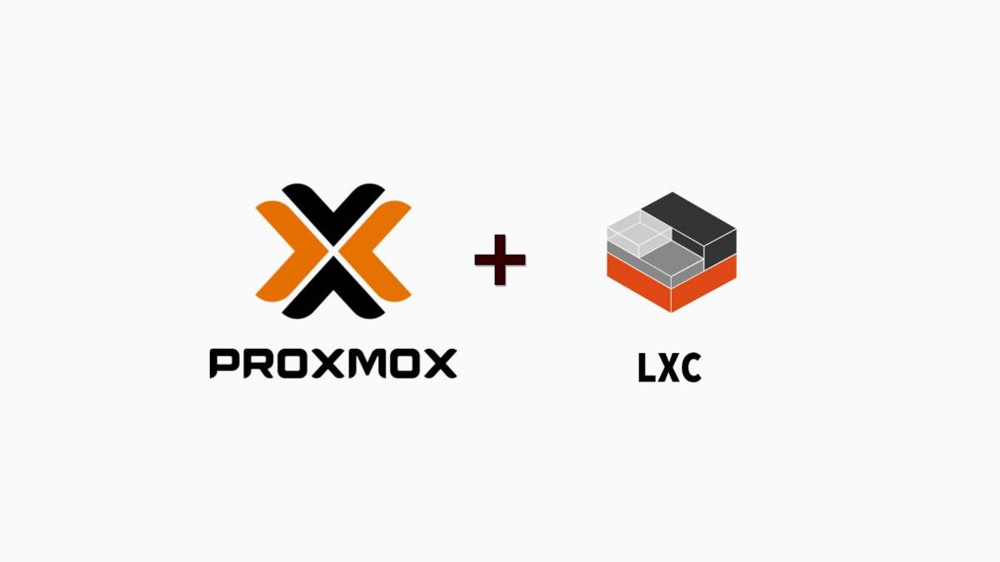
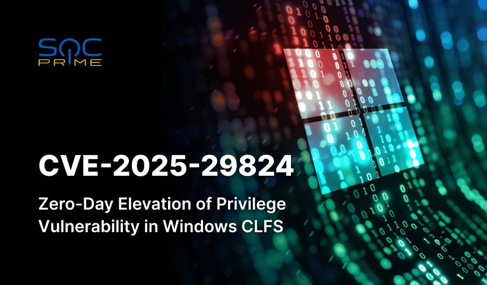
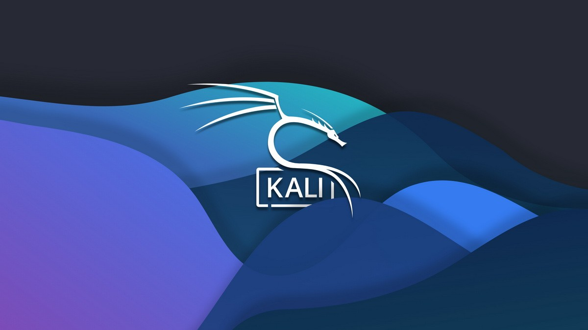
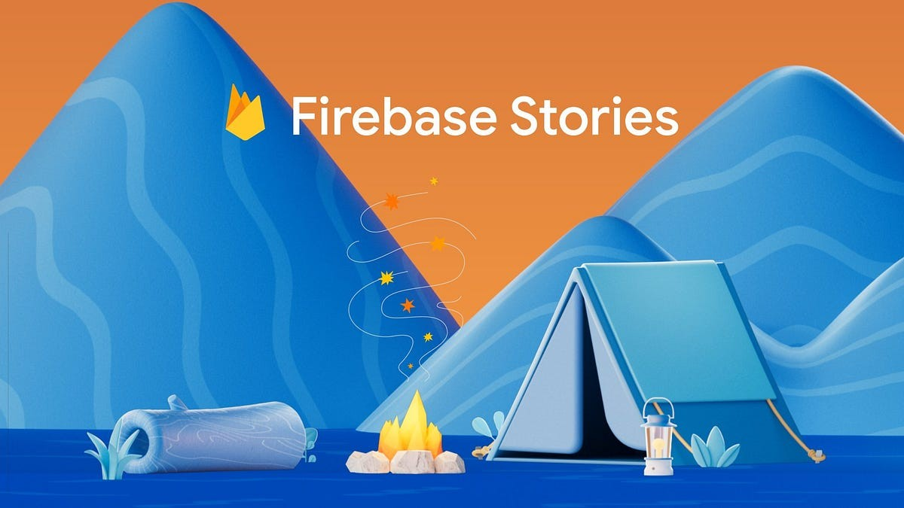

Blog
Real hands-on lab experiments, cybersecurity engineering, and developer workflow reflections.
🔬 Homelab Series
7 postsInside My Proxmox Homelab
Architecture, purpose, and how I designed my cybersecurity lab from the ground up.
Read →
Wazuh SIEM Setup in My Homelab
Building a real-time SIEM inside my Proxmox lab using Wazuh 4.5.
Read →
Monitoring pfSense with Wazuh
Integrating firewall logs into Wazuh for real-time network visibility.
Read →Building a TurnKey File Server in Proxmox
Deploying a lightweight file server container inside my homelab.
Read →
Understanding Proxmox Containers
How LXC containers improved efficiency and isolation in my lab.
Read →
Using Wazuh to Detect CVE-2025-29824
How I detected and mitigated a real high-severity CVE in my homelab.
Read →
Running Kali Linux in a Secure Lab Environment
Designing a controlled red-team workflow inside a monitored blue-team lab.
Read →🌐 Web Development
2 posts⚙️ Dev Tools
2 posts☁️ Cloud & Backend
1 post
Using Firebase for Real-Time App Development
Pros, lessons, and security gotchas from building real-time features with Firebase.
Read →🧠 SOC Engineering
1 postWhy I Stopped Using the Wazuh Agent on pfSense
The architecture lesson that changed how I think about monitoring firewalls — and why more agents isn't always the right answer.
Read →